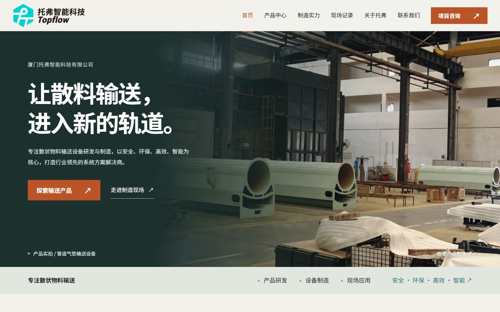
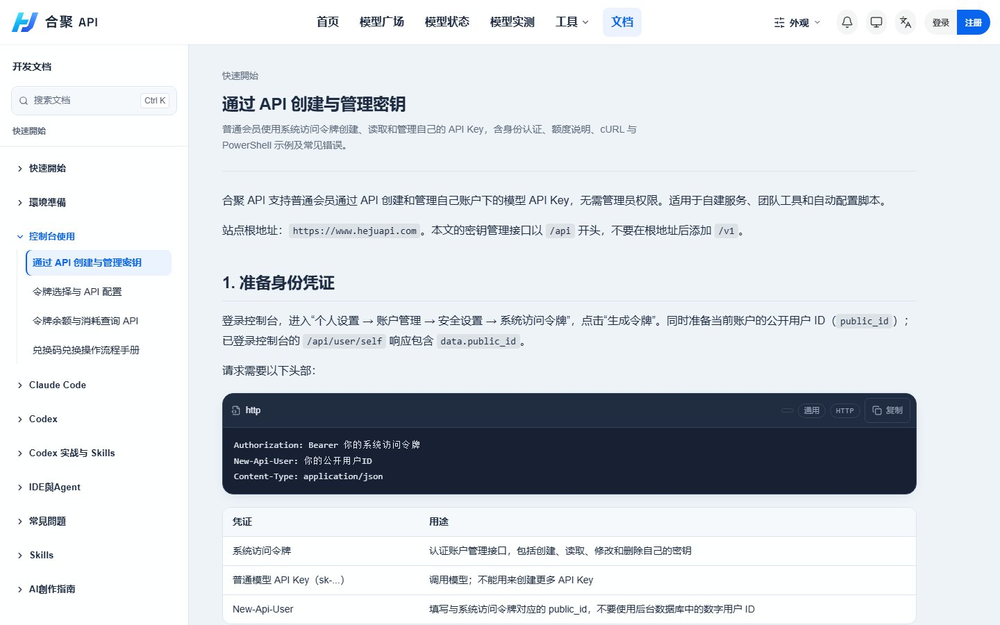

托弗智能科技
网站开发与部署运营 · 2026.6 - 2026.9
散状物料输送设备企业的官网。围绕产品线、制造能力、资质认证与现场视频重新整理素材，把原来零散的资料整合成一条能读下去的浏览路径。
AI 编程工具辅助页面开发 · GitHub 工作流交付 · 站点部署与运营
打开 topflow.cn
下面两个站点都真实在跑，有真实用户。我负责的部分写在每一项下面。
网站开发与部署运营 · 2026.6 - 2026.9
散状物料输送设备企业的官网。围绕产品线、制造能力、资质认证与现场视频重新整理素材，把原来零散的资料整合成一条能读下去的浏览路径。
AI 编程工具辅助页面开发 · GitHub 工作流交付 · 站点部署与运营
打开 topflow.cn
核心运营 · 2026.9 - 2026.11
一个 API 中转服务：把 Codex、Claude、Gemini、DeepSeek 等模型的调用收敛到一个入口。我负责部署、日常可用性维护与用户侧支持，服务面向真实用户，已有实际付费使用。
左边这页文档是我写的：从身份凭证、令牌生成到 cURL 与 PowerShell 示例，把「怎么接进来」讲到用户不用再问人。
服务部署与可用性维护 · 配置排查与问题定位 · 使用文档与公告撰写
打开 hejuapi.com
我是张晨曦，郑州轻工业大学智能物联专业在读。写 Java 和 Python，做后端与 AI 应用，也能把前端和部署一起接住。
两段网站开发与运营经历让我明白，一个东西能不能用，比它写得多漂亮更重要。现在主要在做 AI 应用的落地：把大模型接进真实业务，处理异步任务、回调、异常和边界。
GitHub 上的仓库都在这儿，按能不能直接看出思路分组。star 与更新时间每天自动同步。
居家陪护机器人，整个系统五个部分：树莓派端采集体征与环境数据，Spring Boot 管用户、设备与指令，Vue 控制台和微信小程序给家属用，另有一套 GPT-SoVITS 语音服务。围绕「监测 → 告警 → 联系 → 遥控」闭环。
云盘视频素材去重与标签提取后端。上传只建任务，AI 处理走异步回调，带状态机与验签。MySQL 真实落库，Flyway 管四张表。
智能学习助手。Spring Boot 3 + Spring AI + Ollama 本地模型，记录学习时长与坐姿数据，配一套微信小程序前端。
第八届传智杯 AI 微信小程序，国赛二等奖作品。需求拆解、页面、前后端联调一个人做完。
传送带分拣。YOLOv5 负责视觉识别，MG90S 舵机执行分拣动作，C 写控制端，调试记录都留在提交信息里。
自动化上传视频与图文到抖音、B 站、小红书、YouTube 等十余个平台。上游已有 9k star，我拿它研究浏览器自动化与多平台发布流程。
郑州轻工业大学开发者校友名录，收集大家在做什么。Svelte 写的社区项目。
@RestController
@RequestMapping("/api/cloud/videos")
public class VideoAiController {
private final VideoAiDemoService demoService;
@PostMapping("/upload/callback")
public UploadCallbackResponse uploadCallback(
@Valid @RequestBody UploadCallbackRequest request) {
return demoService.handleUploadCallback(request);
}
@PostMapping("/{id}/ai-callback/dna")
public TaskSubmitResponse dnaCallback(
@PathVariable("id") String id,
@RequestHeader("X-Callback-Token") String callbackToken,
@Valid @RequestBody DnaCallbackRequest request) {
return demoService.handleDnaCallback(id, request, callbackToken);
}
}下面的数据由构建脚本从 GitHub 抓取。项目本身比贡献数字更值得看。
加载中…
AI 应用、后端、前端，还有一点关于工具与方法的思考。